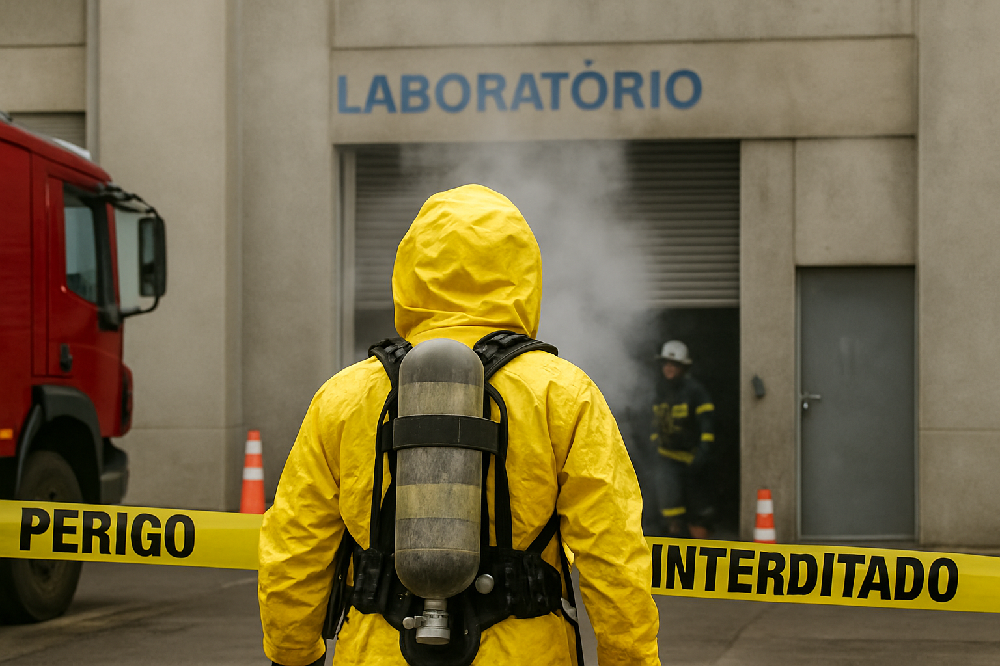

üö® Vazamento qu√≠mico em laborat√≥rio causa alerta em cidade do interior de SP
Limeira, SP — 07 de agosto de 2025
Um incidente envolvendo o vazamento de uma substância química tóxica mobilizou equipes de emergência na manhã desta quinta-feira (07), em um laboratório de pesquisas industriais localizado na cidade de Limeira, interior de São Paulo.
De acordo com as primeiras informações fornecidas pelas autoridades locais, o produto vazado foi o cloreto de metileno, um solvente amplamente utilizado na indústria, mas altamente nocivo à saúde humana. A substância pode provocar sintomas como tontura, náusea, irritação nos olhos e no sistema respiratório — especialmente em casos de exposição prolongada.
Equipes do Corpo de Bombeiros e da Defesa Civil foram acionadas rapidamente e isolaram a área ao redor do laboratório. Moradores de regiões próximas foram orientados a manter portas e janelas fechadas, e, em alguns casos, evacuaram residências como medida preventiva.
“O vazamento foi controlado com sucesso e, até o momento, não há registro de vítimas graves. No entanto, funcionários que estavam no local foram encaminhados ao hospital para avaliação médica”, informou o tenente Carlos Menezes, do Corpo de Bombeiros.
As causas do vazamento ainda estão sendo investigadas, e o laboratório permanecerá interditado até a conclusão dos laudos técnicos da perícia ambiental.
